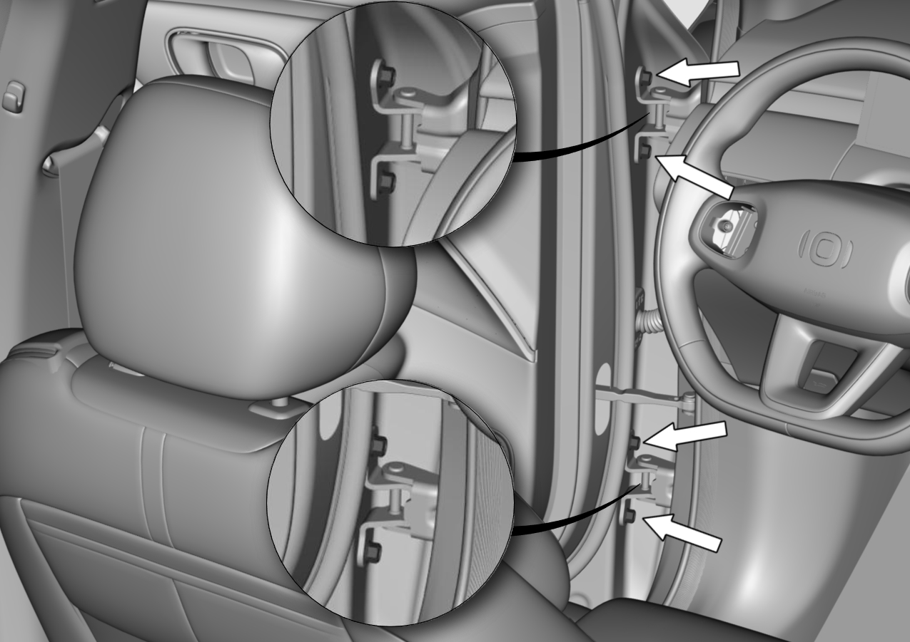
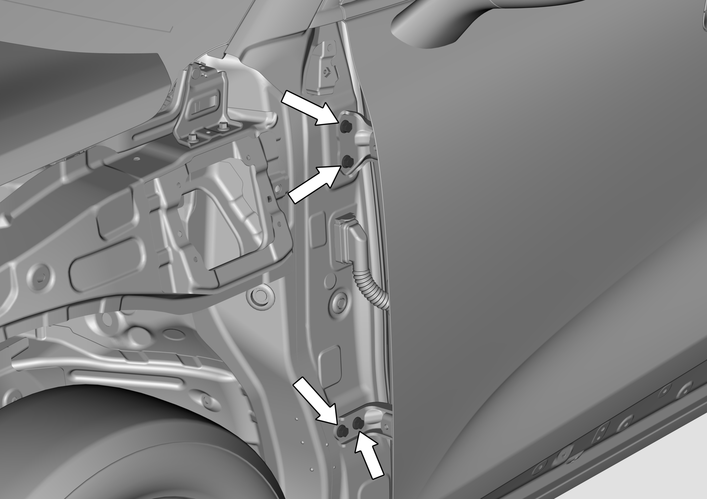

1. Перед регулировкой передней двери автомобиль должен быть неподвижно установлен на горизонтальной поверхности земли.
2. Регулировка выполняется при содействии одного сборщика.
1. С помощью торцевой головки № 13 ослабить (без выкручивания) крепежные болты петли передней двери (со стороны двери) в месте, указанном "стрелкой", и отрегулировать переднюю дверь.
Момент затяжки болтов: 33 ± 3 N.m

1. Если при закрытом состоянии передней двери зазоры по всему периметру равномерны, дверь не выступает наружу и не утоплена внутрь, а контуры выровнены, это означает, что дверь отрегулирована правильно.
2. Если в соответствии с вышеуказанными шагами не удалось достичь требуемого результата регулировки, можно перейти к следующему шагу согласно шагам ниже.
2. Снять крыло
3. С помощью торцевой головки № 13 ослабить (без выкручивания) крепежные болты петли передней двери (со стороны боковины) в месте, указанном "стрелкой", и отрегулировать переднюю дверь 1.
Момент затяжки болтов: 33 ± 3 N.m
